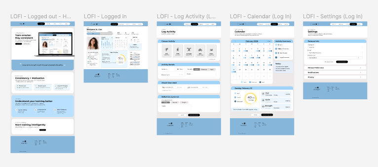

The Challenge
Design a fitness tracking experience that encourages consistency without overwhelming users with data. Many fitness apps focus heavily on metrics, which can feel discouraging or difficult to interpret. The challenge was to create a system that supports motivation, recovery, and long-term progress while remaining clear, flexible, and easy to use.


The Solution
I designed a structured dashboard that translates activity data into clear, actionable insights. The system highlights key moments—daily progress, weekly patterns, and recovery signals—allowing users to understand their performance at a glance.

My Approach
Design for Real-Life Consistency
The system adapts to changing routines, supporting users even when their schedule isn’t perfect.
Prioritize Clarity in Data
Complex fitness data is simplified into readable visuals and key insights, reducing cognitive overload.
Support Recovery and Progression
The experience emphasizes not just activity, but recovery—helping users understand when to train and when to rest.
Build Rhythm through Structure
Daily, weekly, and long-term views create a sense of progression and continuity.


In Conclusion
Volt demonstrates how thoughtful interface design can make fitness tracking more supportive and sustainable. By focusing on clarity, recovery, and consistency, the platform shifts the experience from performance pressure to long-term progress.
